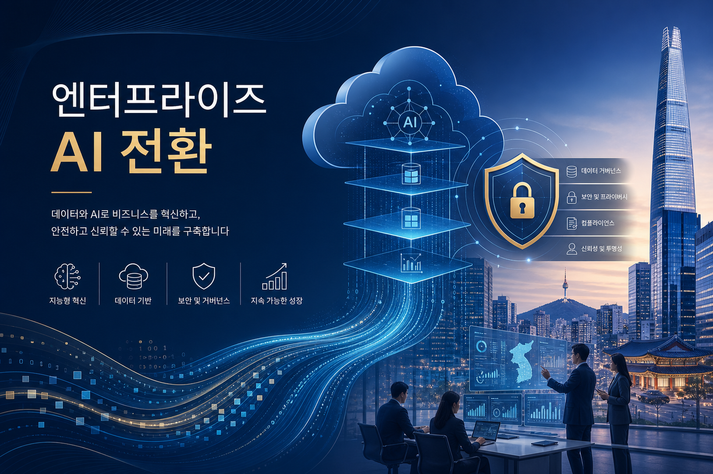
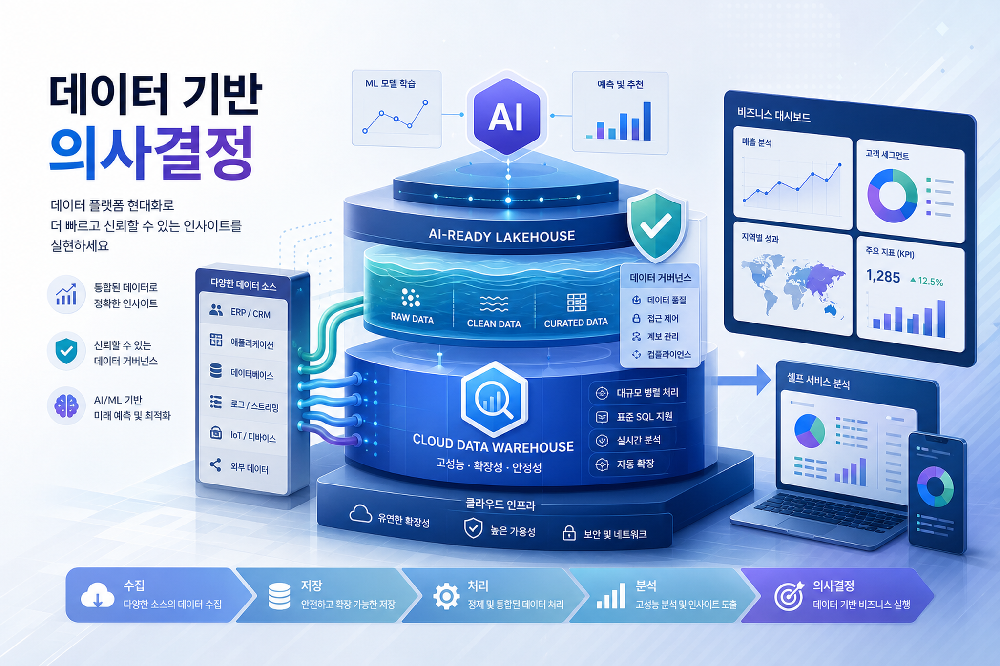
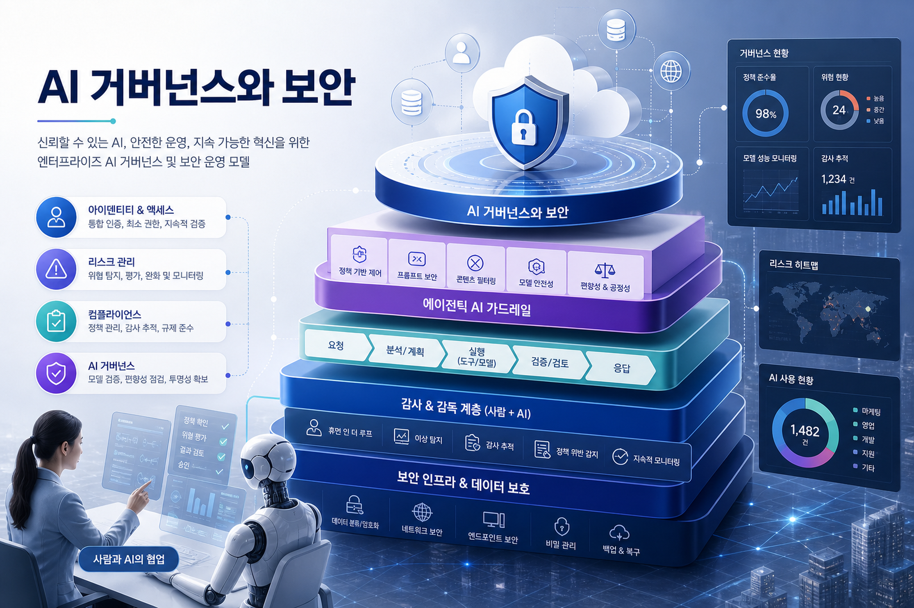

Cloud CISO Perspectives: How Google + Wiz changes multicloud strategy for CISOs
By centering developers and shifting security left, Wiz has seen a significant increase in security resolution. Here’s why this strategy matters for CISOs.
원문 보기Google Cloud 블로그 흐름을 한국 기업의 AI 전환, 데이터 플랫폼, 보안 거버넌스 실행 관점으로 재해석했습니다.
이번 실행 신규 문서와 최근 24시간 내 소스가 없어, 최신 저장 문서 일부를 보조 맥락으로 사용했습니다. 당일 신규성은 확인 필요입니다.

AI 코딩 에이전트와 Gemini 계열 도구는 생산성 향상을 넘어, 어떤 파일·권한·정책을 신뢰할지 정의하는 보안 아키텍처 이슈로 확장되고 있습니다.
LLM 기반 SQL, BigQuery, 프록시 모델 접근은 데이터 분석의 병목을 비용·성능·정확도 균형 문제로 재정의합니다.
Wiz, IAM, 런타임 방어, 위협 인텔리전스 흐름은 클라우드 보안이 도구 단위가 아니라 운영 모델 단위로 통합되고 있음을 보여줍니다.
기업은 AI 모델 도입보다 먼저 데이터 품질, 접근통제, 비용 가시성, 런타임 방어를 하나의 플랫폼 운영 체계로 묶어야 합니다.
AI Agent TrustData CloudSecurity GovernanceCloud Run/GKE
기능 검증만이 아니라 IAM 범위, 데이터 반출 경로, 비용 상한, 감사 로그를 PoC 성공 기준에 포함해야 합니다.
AI 서비스별 책임자, 모델·데이터 승인 흐름, 사고 대응 playbook을 클라우드 landing zone 정책과 연결해야 합니다.
BigQuery·Spanner·Bigtable·Cloud Run 같은 기반 서비스는 개별 프로젝트가 아니라 재사용 가능한 엔터프라이즈 플랫폼 블록으로 표준화해야 합니다.
한국 대기업과 금융·제조·공공 조직은 AI 도입 속도보다 규제 대응, 개인정보·영업기밀 보호, 계열사/해외법인 간 표준 운영 모델 정립이 더 큰 제약으로 작용합니다. GCP 최신 흐름은 AI 전환을 CDO/CIO 단독 과제가 아니라 CISO, 데이터 거버넌스, 플랫폼 엔지니어링이 함께 설계해야 함을 시사합니다.

By centering developers and shifting security left, Wiz has seen a significant increase in security resolution. Here’s why this strategy matters for CISOs.
원문 보기As SaMD moves from reactive diagnostics to proactive learning systems, cloud has become a superior foundation for regulated medical software.
원문 보기Proxy models use embeddings to replace most LLM calls, boosting speed and cutting token costs by >100x. Benchmarks confirm they deliver commensurate quality to LLMs.
원문 보기We are proud to announce that Google has been recognized as a Leader in the inaugural 2025 Gartner Magic Quadrant for AI Application Development Platforms for our Ability to Execute and Completeness of Vision.
원문 보기AI 코딩 에이전트가 개발 워크플로우의 핵심으로 자리 잡으면서, 방어자들은 악성 파일로부터 시스템을 보호하는 방식을 근본적으로 재고해야 합니다. 이에 대비하기 위해 여러분이 반드시 알아두어야 할 핵심 사항을 정리해 드립니다.
원문 보기As AI coding agents become embedded in developer workflows, defenders must rethink how to protect against malicious files. Here’s what you need to know.
원문 보기At Google Cloud Next ’26, we announced a Gemini-powered manageability interface for Database Center that reasons across the entire Data Cloud.
원문 보기- Bigtable now offers data tiering across RAM, SSD, and HDD into a single, unified service with a hybrid storage architecture. - In the high-stakes world of digital infrastructure, speed isn't just a metric — it’s currency. At Google Cloud Next ‘26 we announced the Bigtable in-memory tier , a breakthrough for our fully managed cloud database service that delivers: - ~10x higher point read throughput per dollar , dramatically reducing TCO
원문 보기| 발행일 | 블로그 | 문서 | 기술 키워드 |
|---|---|---|---|
| 2026-05-14 | Google Cloud Blog - Identity & Security | Cloud CISO Perspectives: How Google + Wiz changes multicloud strategy for CISOs | Gemi i IAM |
| 2026-05-13 | Google Cloud Blog - Identity & Security | Why cloud infrastructure is the foundation for digital health in 2026 | Gemi i Gemi i E terprise IAM IAP |
| 2026-05-13 | Google Cloud Blog - Data Analytics | More than 100x Faster & Cheaper LLM-Powered SQL Queries with Proxy Models | Gemi i Gemi i E terprise BigQuery AlloyDB |
| 2026-05-14 | Google Cloud Blog - AI & Machine Learning | Google Named a Leader in the Gartner® Magic Quadrant™ | Vertex AI Gemi i Gemi i E terprise |
| 2026-05-12 | Google Cloud Blog Korea | AI 코딩 에이전트는 무엇을 신뢰하는가? 공격자가 노리는 코드 이면의 취약한 파일들 | Gemi i Gemi i E terprise IAM Ma dia t VirusTotal |
| Beyond source code: The files AI coding agents trust — and attackers exploit | Gemi i Gemi i E terprise Age t Gateway IAM Ma dia t VirusTotal Cloud Storage MCP | ||
| Database Center improvements from Next ‘26 | Gemi i BigQuery Spa er AlloyDB Cloud SQL Firestore Memorystore Bigtable IAM MCP Model Co text Protocol | ||
| Scaling real-time performance with Bigtable in-memory tier | Bigtable Bigtable i memory tier Bigtable E terprise Plus Data Cloud Cloud Next |
목적: Hero / 삽입 위치: 상단 hero / 권장 비율: 3:2 / alt: 엔터프라이즈 AI 전환을 상징하는 클라우드 전략 이미지
image2 prompt: Enterprise AI, data cloud and security governance strategy for Korean enterprises, executive technology blog hero image, abstract cloud architecture, no logos, premium editorial illustration, Korean business context, readable minimal Korean title text: 엔터프라이즈 AI 전환
목적: 데이터 플랫폼 인포그래픽 / 삽입 위치: 기술 변화 섹션 / 권장 비율: 3:2 / alt: 데이터 기반 의사결정과 AI-ready 데이터 플랫폼 이미지
image2 prompt: Data platform modernization for enterprise analytics: BigQuery, data governance, AI-ready lakehouse, abstract dashboard and data flow visual, Korean executive blog illustration, no company logos, include concise Korean text: 데이터 기반 의사결정
목적: 보안/거버넌스 비주얼 / 삽입 위치: 리스크 섹션 / 권장 비율: 3:2 / alt: AI 거버넌스와 보안 운영 모델 이미지
image2 prompt: Cloud security and AI governance operating model for enterprises, identity, risk, compliance, agentic AI guardrails, abstract shield and workflow visual, Korean executive blog illustration, no company logos, include concise Korean text: AI 거버넌스와 보안